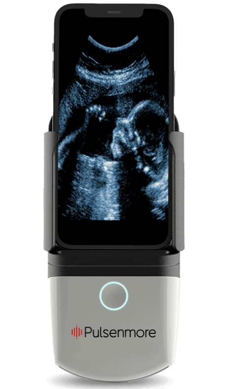
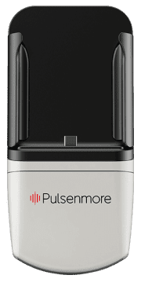
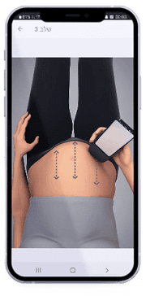

Pulsenmore Ltd. · Home ultrasound · Nasdaq and TASE: PLSM
A healthy pregnancy shouldn’t depend on geography.
Pulsenmore makes a hand-sized ultrasound device that docks with a pregnant woman’s own phone. She scans at home, and a clinician reviews the clip or guides the scan by video. In its annual report the company calls itself “an emerging medical device company”; 2026 is the year it says it launched commercial activities in the United States.
- Oct 31, 2025 FDA de novo authorization, Class II, for images from which a clinician can determine fetal heart rate, as the 20-F describes it 20-F
- Feb 2026 First U.S. home ultrasound scan on a patient, after the first provider was onboarded at the end of January H1 release

- Jan 21, 2026 Trading begins on Nasdaq. The shares have traded on the Tel Aviv Stock Exchange since June 2021 6-K 20-F, Item 4.A
- NIS, IFRS Reported in shekels. Dollar figures in the filings are a convenience translation, so this page leads with NIS 20-F, note 2
Latest reported figures
Six months to June 30, 2026
From the unaudited interim statements furnished on August 31, 2026. All in NIS; the US dollar equivalents use the filing’s own rate of NIS 2.978.
The company
What Pulsenmore sells, and the gap it addresses
Pulsenmore Ltd. was incorporated in Israel on October 27, 2014. At March 15, 2026 it had 63 employees, 51 of them in Israel. It holds 31 issued patents and 63 pending applications in 21 families. 20-F, Items 4 and 6
Prenatal
The flagship. A cradle, an app and a clinician dashboard let a woman scan from week 14 of a single pregnancy. The 20-F describes it as approved in markets including the United States, Europe, Switzerland, Australia, Brazil, Colombia and Israel; the company website also lists the United Kingdom and says indications differ by region. 20-F, Item 4.B
Fertility
Self-scanning of ovarian follicles and endometrial thickness during IVF or fertility preservation. Approved in Israel. The company says CE (MDR) and UK MHRA registrations were completed in September 2026. No U.S. submission yet: it wants more real-world experience first.
Lung fluid
Daily lung-fluid monitoring for patients with pulmonary conditions, end-stage renal disease or heart failure. Early development, in feasibility trials; a nine-patient pilot was published in January 2025.
The access gap, in the 20-F’s own sources
- about 3.6 million U.S. births a year (CDC, as cited by the company)
- 35% of U.S. counties are maternity care deserts (March of Dimes, as cited)
- about 750,000 avoidable pregnancy-related emergency department visits a year, roughly $1 billion in cost: the company’s internal analysis of AMN Healthcare and HCUP data
- about 140 million births a year worldwide (WHO, as cited)
The 20-F presents these as context for its U.S. plan. They are third-party and company-analysis figures, not results. 20-F, Item 4.B
| Segment | Figure as quoted | Named source |
|---|---|---|
| Global ultrasound | $8.6B in 2023, to $13.9B by 2030 (6.8% CAGR) | Markets and Markets |
| Portable ultrasound devices | $5.7B in 2024 (4.5% CAGR, 2025 to 2030) | Grand Review Research (the 20-F’s spelling for this figure; it writes Grand View Research for the U.S. one) |
| Prenatal, fetal and neonatal equipment | $4.2B in 2024, to $7.1B by 2033 (6.5% CAGR, 2026 to 2033) | Verified Market Reports |
| U.S. non-invasive prenatal | $1.6B (8.2% CAGR, 2023 to 2030) | Grand View Research |
The company publishes no market estimate of its own and neither does this page. These are quoted, not endorsed.
The system
How a scan happens
Three elements make up the Pulsenmore ES: a device (the cradle), a mobile app and a clinician dashboard. The woman needs no medical training, according to the 20-F. 20-F, Item 4.B
-

The phone docks in the cradle
The cradle takes an Android or an iOS phone. It holds the ultrasound transducer and a circuit board, and its face touches the skin. It is a reusable, non-sterile device for one patient and one pregnancy.
-

The app guides a five-step scan
The app, written with obstetric guidance according to the company, walks her through the scan, records the clip, does first-pass image processing and sends the clip to the cloud. In the app-guided mode it takes under five minutes.
-
A clinician reads it
The clip lands on a clinician dashboard. From there a clinician can adjust gain, focus, power and depth, and either review the scan afterward or join a live video session. Each scan is read by a clinician before results go back to the patient, the company says.
Clinician-guided
The woman starts a video call from the app. A clinician talks her through the five-step procedure; it typically takes a few minutes, and the clinician gives feedback in real time. In its Clalit agreement the company charges extra for this synchronous option.
App-guided
She follows the protocol herself and uploads the video. A clinician reviews it afterward from the dashboard and sends feedback. Clalit’s home ultrasound service runs in this mode; the company says its reading center had interpreted more than 140,000 scans by January 2025.
Inside the probe
- 1A curved array of 64 piezoelectric elements with a silicone-coated acoustic lens.
- 2A 58.8-degree scanning beam. The phone’s processor filters the raw image and shows it in B-mode.
- 3The array has an R60 mm curvature, meaning a 60 millimetre radius.
- 4For heart rate the transducer is aimed at the fetal heart and builds an M-mode image.
- 5The beams fan out from the centre of that curve. This point follows from the stated radius; the filing does not mark it.
Specifications
Pulsenmore ES
- Weight
- 260 g (0.57 lb)
- Dimensions
- 166 x 78 x 38 mm
- Imaging
- B-mode; M-mode for heart rate
- Image resolution
- 1080p (Full HD)
- Bioeffects
- TI 0.03, MI 0.4
- Scan time
- Up to 3 minutes, video-guided
- Connectivity
- Wi-Fi or cellular, via the phone
- Intended user
- One patient, one singleton pregnancy, weeks 14 to 40
Company specifications page, observed October 12, 2026, and the 20-F. pulsenmore.com/specifications
Evidence
The U.S. pivotal study, against its own targets
HOLA, completed in October 2024 at four U.S. centers: 188 women enrolled, 171 completed, 162 analyzed, 1,370 scans as the 20-F states it (its three parts, 458 app-guided, 453 clinician-guided and 458 in clinic, add to 1,369). Ten readers read the app-guided scans and ten others the clinician-guided scans, blind to the ground truth, which three expert readers set by majority from the in-clinic scans. The final effectiveness analysis was performed retrospectively, after the study closed. 20-F, Item 4.B
Plate II Six endpoints, each bar against its target
- Measured value
- Study target
Fetal heart rate visualizedclinician-guided
99.2%target above 90%Met
Fetal heart rate visualizedapp-guided
97.2%target above 80%Met
Amniotic fluid: specificityclinician-guided
80.0%target above 70%Met
Amniotic fluid: specificityapp-guided
91.6%target above 70%Met
Amniotic fluid: sensitivityclinician-guided
69.3%target 70%Not met
Amniotic fluid: sensitivityapp-guided
49.3%target 70%Not met
Safety: no device-related or procedure-related serious adverse events were reported. Image quality: more than 90% of scans were graded sufficient for diagnosis (ACEP 3 or higher).
The 20-F’s own conclusion: the device “did not meet the sensitivity endpoint for AFV”, where AFV is amniotic fluid volume. The 20-F describes the U.S. authorization (below) as covering fetal heart rate.
A selection of the 20-F’s other evidence, with its caveats
| Study | Size | What it reports | Limit or caveat in the filing |
|---|---|---|---|
| Clalit retrospective analysis, 2020 to 2022 | 4,460 users, 102,707 non-users | Preterm birth and adverse neonatal outcomes did not differ; no maternal, obstetric or neonatal adverse outcome tied to use | Users differed from non-users: higher socioeconomic scores, more first pregnancies, more chronic disease and pregnancy complications |
| Clalit reading center | Over 140,000 scans to January 2025 | The company reports over 98% precision on fetal cardiac activity, movements and amniotic fluid | Real-world service data in the company’s words, not a controlled trial |
| Clalit feasibility study, 2022 | 100 women, 7 to 14 days of use | Detection success: fetal heart activity 95.3%, body movements 88.3%, normal amniotic fluid volume 92.2%, tone 69.4%, breathing movements 23.8% | The primary endpoint was safety; tone and breathing movements were detected less often than heart activity |
| Erlangen, Germany, 2023 | 46 women, 23 per device | Fetal heartbeat located in 65.2% of Pulsenmore videos against 91.3% for the Butterfly iQ; amniotic fluid 43.5% against 60.9% | A prototype of the ES; the company attributes the result to the prototype or to reader training |
| Charité, Germany, 2024 | 50 women near term | 92% of scans adequate for analysis; 91.9% of women felt safe using it | Observational; satisfaction is self-reported |
| Heart rate and fluid-pocket measurement tools, 2024 | 28 women | Heart-rate tool used successfully on 84.7% of app-guided and 96.3% of clinician-guided scans; heart-rate error 10.8 beats a minute app-guided against 5.8 clinician-guided | Scans were stored for later reading and each was immediately followed by an in-clinic scan for comparison; the app-guided arm is the less accurate |
| Sheba hybrid care, gestational diabetes, 2024 | 20 women, four weeks | Remote visits succeeded in 97.4% (38 of 39); median visit 59 minutes against 159 in clinic | Small pilot; the ES was used for amniotic fluid inside a modified biophysical profile |
| Two randomized studies after pregnancy loss, 2024 | 50 women each | Anxiety score at the last visit lower with home scans: 30 against 40, P = .037, as reported | The 20-F gives one P value for the primary outcome across the two studies |
| Remote biophysical profile, Beilinson and Michigan | 55 women | 92.7% score agreement with in-clinic scoring (51 of 55) | Feasibility and proof of concept; the company plans more evidence in 2026 that it says could support FDA approval of a biophysical profile use |
Cleared
Where the ES is authorized, and for what
As the 20-F describes it, the U.S. authorization is narrower than the product’s own intended-use paragraph. Both appear in the same annual report, side by side below. The filings do not reproduce the FDA’s own indications for use.
What the FDA route covers
The company filed a de novo request in December 2024, after the FDA redirected a 2020 510(k) filing. The 20-F says the ES received “FDA clearance” as a Class II device “to enable the acquisition of ultrasound images that allow interpreting healthcare providers to determine fetal heartrate.” Elsewhere the same report says “approval”.
What the product description says
The ES “is intended to enable the acquisition of ultrasound images that allow interpreting healthcare professionals to determine amniotic fluid levels and fetal heart rates”, for a singleton pregnancy at 14 to 40 weeks in a non-clinical setting. The same paragraph says it is “intended to entirely replace standard and ordinary ultrasound sessions that are typically performed in a clinic” and also “not intended to replace ultrasounds that require the intervention of doctors”; elsewhere the 20-F says it complements but does not replace in-clinic visits.
Amniotic fluid sensitivity is the endpoint HOLA did not meet. In the first half of 2026 the company says it submitted a Q-Sub for a potential expansion of the U.S. indications. H1 release
| Product | Market | Status | Source |
|---|---|---|---|
| ES | United States | FDA de novo authorization, Class II, received October 31, 2025. The H1 release says the ES Tera line (iOS and Android) received “applicable regulatory clearances or authorizations” from the FDA and Israel’s Ministry of Health in the first half of 2026 | 6-K, note 1 H1 release (ES Tera) |
| ES | European Union | CE under the MDR; the EU quality management system certificate is dated August 26, 2025 and valid to August 19, 2030 | 6-K, note 1 |
| ES | Israel, Switzerland, Australia, Brazil, Colombia | Described as approved for use | 20-F, Item 4.B |
| FC | Israel | Approved; sold to Clalit under a 2021 agreement and a January 2026 addendum | 20-F, Item 4.B |
| FC | European Union and United Kingdom | The company says CE (MDR) registration was completed in September 2026 and MHRA registration for the UK days later | 6-K, Sep 8 Sep 17 |
| FC | United States | Not submitted. The company wants more real-world experience in Israel first | 20-F, Item 4.B |
| MC | None | In development, in clinical feasibility trials | 20-F, Item 4.B |
What the 20-F says the U.S. model is meant to be
Intentions stated in the annual report, not results.
- About $1,000 targeted per pregnancy, for single-patient-use devices, starting with high-risk pregnancies (about 20% of births).
- About 40% of U.S. revenue targeted from clinician-dashboard subscription fees.
- CPT 76815an existing reimbursement code that the company expects to be available at launch; it plans to pursue further codes, including 76819 for biophysical profiles.
- Launch in 2026 with obstetric networks, hospitals, telehealth providers and employer groups.
Customers and record
Who buys it today
Almost all of 2025 product revenue came from one customer, Israel’s largest health maintenance organization. The U.S. launch is a few agreements old.
Plate I ES units supplied to Clalit
4,987
20237,148
20246,915
2025NIS 8,818K of NIS 9,484K product revenue in 2025 came from Clalit: about 93%. Computed 20-F, note 15
- The ES agreement. A five-year agreement signed October 28, 2024 commits the company to supply at least 25,000 units over up to 60 months, with minimum annual quantities. Either side can cancel on 9 months’ notice.
- The FC addendum, January 21, 2026. An 18-month pilot, then five years, with a yearly minimum of 2,000 FC units (units sold directly by the company are deducted) and a right for Clalit to return up to 1,000 a year. The company’s documents value it differently: about $4.5 million over five years in the January 26 release, and total consideration of $9 million in the interim statements’ note 6. This page does not reconcile the two. The 20-F also says the original December 2021 FC agreement had an aggregate value of $10.8 million over four years. 6-K of Jan 26 Release 20-F, Item 4.B 6-K, note 6
- The 20-F’s risk language. Revenue is “highly concentrated with one customer”, and near-term performance depends on Clalit’s continued demand and on conditions in one of its agreements.
| Counterparty or program | Terms as filed | Date |
|---|---|---|
| Center for Fetal Medicine & Women’s Ultrasound, Los Angeles | Services agreement to buy Pulsenmore ES home ultrasound services; one-year term, auto-renewing. The center manages about 1,500 pregnancies a year | Jan 29, 2026 |
| TLC Perinatal PA, Maryland | Services agreement on the same model, in a physician-directed hybrid pathway. About 2,000 pregnancies a year across two sites | Feb 4, 2026 |
| Ouma Health | Strategic partnership to bring the platform into a virtual maternity care model across the U.S.; the filings give no financial terms | Jun 17, 2026 |
| Lis Maternity and Women’s Hospital at Ichilov, Israel | The company says the technology will be integrated there, alongside other Israeli medical centers | Aug 19, 2026 |
| Sheba Medical Center, Israel | Two-year agreement; an order for 300 units, of which 110 were supplied in 2025 (about NIS 0.3 million) | Feb 29, 2024 |
| Gold Coast University Hospital, Australia | Non-binding memorandum of understanding; 100 units ordered and supplied; a definitive agreement is intended within a year | Jul 22, 2025 |
| Italian distributor | Four-year distribution agreement; an initial order of about EUR 400 thousand. The distributor ordered 120 units and the purchase date has been postponed | May 10, 2024 |
| GE Precision Healthcare | Non-exclusive distribution rights in the U.S. and Europe to June 2029; no obligation to place orders (after the August 2025 settlement) | Aug 6, 2025 |
| Israel Innovation Authority, two AI programs | NIS 1.2 million approved on a NIS 3 million project, and NIS 3.8 million approved for SmartScan AI. At the report date the company had received no grant under either and had incurred no related cost | Jul 2 and Aug 12, 2026 |
Sources: 20-F, Item 4.B and note 12, 6-K of August 31, notes 6 and 7, and the company’s releases on the filings list below.
Financials
Reported results, in shekels
The company reports in New Israeli Shekels under IFRS. The dollar figures in its filings are a convenience translation at one date’s rate (NIS 3.19 at December 31, 2025; NIS 2.978 at June 30, 2026), so they do not compare across periods. The tables below keep to NIS thousands as filed.
| NIS thousands | FY2023 | FY2024 | FY2025 | H1 2025 | H1 2026 |
|---|---|---|---|---|---|
| Revenue from product sales | 6,188 | 9,661 | 9,484 | 3,999 | 6,080 |
| Revenue from the GE settlement | none | none | 30,540 | none | none |
| Total revenue | 6,188 | 9,661 | 40,024 | 3,999 | 6,080 |
| Cost of revenues | 3,987 | 6,084 | 6,342 | 2,542 | 3,855 |
| Gross profit | 2,201 | 3,577 | 33,682 | 1,457 | 2,225 |
| Research and development, net | 31,399 | 20,130 | 17,350 | 8,029 | 8,459 |
| Sales and marketing | 9,434 | 10,318 | 11,815 | 5,966 | 6,382 |
| General and administrative | 16,954 | 15,344 | 16,681 | 8,083 | 8,141 |
| Operating loss | 55,586 | 42,215 | 12,164 | 20,621 | 20,757 |
| Financial expense (income), net | 2,854 | -5,423 | 3,688 | 2,535 | 14,315 |
| Income tax provision (benefit) | 127 | -56 | 1 | 1 | none |
| Net loss | 58,567 | 36,736 | 15,853 | 23,157 | 35,072 |
| Net cash used in operations | 49,664 | 41,461 | 32,876 | 15,570 | 17,571 |
Filed 20-F, F-4 and F-7 6-K, F-2 and F-5. The August 6, 2025 GE settlement came after H1 2025, so neither half-year has settlement revenue. A minus in the financial or tax row means income. Net loss is operating loss plus net financial expense plus the tax line.
The same results in the filings’ dollar translation
FY2025 at NIS 3.19: total revenue $12.5M, of which $9.6M is the settlement; net loss $5.0M. H1 2026 at NIS 2.978: revenue $2.0M; net loss $11.8M. The shekel was stronger at the second date, which is why the two dollar sets cannot be set side by side. The company’s March 30 release quotes a 374% revenue increase in dollars; its 20-F text says 312.4% in shekels; the filed shekel totals, NIS 40,024K against NIS 9,661K, compute to 314.3%. The release compares dollars with 2024 translated at a different rate (it shows 2024 revenue as $2.6M, where the 20-F’s convenience figure is $3.0M), and the 20-F’s 312.4% divides rounded shekel millions.
| NIS thousands | Dec 31, 2024 | Dec 31, 2025 | Jun 30, 2026 | Jun 30, 2026, US$ thousands |
|---|---|---|---|---|
| Cash and cash equivalents | 41,170 | 21,604 | 43,584 | 14,635 |
| Short-term bank deposits | 62,853 | 47,531 | 26,180 | 8,791 |
| Cash and deposits together | 104,023 | 69,135 | 69,764 | 23,426 |
| Inventory, current portion | 23,092 | 6,593 | 6,345 | 2,131 |
| Inventory, non-current portion | none | 13,337 | 13,742 | 4,615 |
| Total assets | 141,826 | 101,847 | 99,906 | 33,549 |
| Warrant liability (June 2026 placement) | none | none | 33,198 | 11,148 |
| Total liabilities | 44,939 | 18,757 | 51,568 | 17,317 |
| Total equity | 96,887 | 83,090 | 48,338 | 16,232 |
| Accumulated deficit | 167,288 | 183,141 | 218,213 | 73,275 |
Filed 20-F, F-3 6-K, F-1. Cash and deposits at December 31, 2025 were NIS 69.1M, about $21.7M at NIS 3.19. The company moved NIS 13.3M of inventory from current to non-current in 2025 after it reassessed the expected realization period of certain raw materials and finished goods; NIS 13.7M is non-current at June 30, 2026. 20-F, note 7
What the company says about funding
- It believes cash and deposits plus expected operating cash flow cover its needs for at least 12 months from the report date, and also says it expects continued losses and negative operating cash flow and may need to raise more funds. It adds that there is no assurance it will obtain the financing it needs, and that if it cannot commercialize its products or raise capital it “may need to reduce activities, curtail or cease operations”. 6-K, operating review
- The auditor’s opinion on the 2025 statements (Kesselman & Kesselman, a PwC member firm, auditor since 2021) is unqualified and carries no going-concern paragraph. 20-F, F-2
- The company owes the Israel Innovation Authority royalties of 3% of sales of products its grants helped develop, capped at NIS 14.7M at June 30, 2026 (NIS 15.6M at December 31, 2025). The recorded liability was NIS 9.3M at June 30, 2026 and NIS 9.6M at December 31, 2025. 6-K, operating review 6-K, F-1 20-F, Item 5.B
Inside the numbers
Three drawings, in the bars of the company’s own mark
Each drawing keeps one scale. Every value is a filed NIS figure; where a segment is computed or approximate, it says so.
Plate III Revenue, NIS millions
6.2
FY20239.7
FY202440.0
FY20254.0
H1 20256.1
H1 2026- Product sales NIS 9.5M in 2025
- Settlement payments NIS 7.1M: GE’s $1 million and the $1 million 2022 advance the company keeps. Derived: 30,540 less 23,392
- Released deferred revenue NIS 23.4M, recognized in August 2025
The NIS 23.4M was a contract liability already on the balance sheet at December 31, 2024 (NIS 28.0M in all). The company recognized it as revenue when it concluded no performance obligations remained after the settlement. 20-F, notes 12 and 15
Cash used in operations in 2025 was NIS 32.9M against a net loss of NIS 15.9M, because the cash flow statement deducts NIS 27.1M for the decrease in contract liabilities: revenue that brought no cash in the year.
Product revenue alone was NIS 9.5M in 2025 and NIS 9.7M in 2024.
Plate IV H1 2026: from operating loss to net loss, NIS millions
Net loss 35.1
- Operating loss 20.8
- Day-one loss on the pre-funded warrants about 12.0
- Rest of net financial expense about 2.3, computed; it is a net figure
Net financial expense was NIS 14.3M against NIS 2.5M in H1 2025. The company says the increase was driven primarily by the private placement: the excess of the pre-funded warrants’ initial fair value over the proceeds, about NIS 12 million, went to financial expense, and all NIS 2.1M of placement costs were expensed because every instrument is a liability. The rest is a net figure: the operating review lists NIS 2.1M of placement costs and a NIS 2.3M exchange loss on deposits, offset by NIS 1.2M of warrant fair-value gain and NIS 0.9M of interest income. 6-K, note 4 operating review H1 release
Plate V The June 2026 placement and the liability it created, NIS millions
Gross proceeds
22.5
Warrant liability, Jun 30
33.2
- Pre-funded warrants 24.7
- Ordinary warrants 8.5
The pre-funded warrants are carried at the share price less their $0.0001 exercise price, and every warrant is remeasured through profit or loss each period, so a higher share price raises the liability and the loss. The ordinary warrants were valued with Black-Scholes at a $5.56 share price against their $4.80 exercise price, and are carried at NIS 8.5M after deducting a NIS 7.3M deferred day-one loss, which is released to financial expense over their five-year life (NIS 16 thousand by June 30). 6-K, notes 4 and 5
Capital and people
Shares, warrants and who holds them
Pulsenmore consolidated its shares one for eight on December 28, 2025, so every per-share figure in the filings is post-split. 20-F, Item 3 and note 1
Share count and the June 2026 warrants
What can become a share
- Ordinary shares outstanding
- 6,502,844 at Mar 15, 2026
- Weighted average, H1 2026
- 6,502,844
- Pre-funded warrants
- 1,562,500 at $0.0001, no expiry
- Ordinary warrants
- 1,562,500 at $4.80, five years
- Warrant shares
- 3,125,000, 48.1% of the shares outstanding (computed)
- Options outstanding
- 383,229 (264,786 vested) at Mar 15, 2026
- Authorized capital
- 31,250,000 ordinary shares
- Exercise cap
- No exercise past 4.99% ownership
- Placement agent
- A.G.P./Alliance Global Partners, 7.0% cash fee plus up to $50,000 of expenses
The company agreed to file a resale registration statement within 10 trading days and to pay liquidated damages if it misses a deadline or lets it lapse. The registration statement was declared effective on July 10, 2026. Officers and directors are locked up, and the company is barred from issuing most new shares, until 30 days after effectiveness; variable-rate transactions are barred until six months after effectiveness. The ordinary share count did not change in the H1 equity statement. 6-K of June 25 6-K, F-3 6-K, operating review 20-F, Item 3
| Holder | Percent, proxy | Percent, 20-F | Shares, proxy |
|---|---|---|---|
| Dr. Elazar Sonnenscheinfounder and CEO; includes 883,162 shares held through D.L.L.D. Consulting Ltd., which he wholly owns | 28.8% | 28.2% | 1,872,092 |
| Esther Luzzattowith her husband Kfir Luzzatto and Eluv Ltd., their company | 7.2% | 7.1% | 468,750 |
| Aquamarine Equity Fund Ltd.Cayman fund; voting rights held by its investment manager | 5.2% | 5.1% | 338,541 |
| Jonathan Aderethchairman of the board | 2.0% | 1.9% | 129,062 |
| All directors and executive officers (10 persons)as the July 1 proxy states it | 33.1% | 44.6%* | 2,155,591 |
The proxy percentages recompute on 6,502,844 shares; the 20-F’s are lower, and they imply a base near 6.6 million. Computed *The 20-F’s group row (2,959,952 shares, 44.6%) equals the ten directors and officers (2,152,661, summed from its own rows) plus the Luzzatto and Aquamarine holdings (807,291), so it is not a directors-and-officers total. About 69% of the shares are held in the name of Cede & Co. for U.S. holders, and the company reported two holders of record. Proxy, July 1 20-F, Item 7.A
Leadership and governance
- Dr. Elazar SonnenscheinFounder, CEO since 2014 and a director; before Pulsenmore, CEO of Medigus from 2000 to 2013
- Eran HirshChief Financial Officer since August 2024; a CPA, previously at EY Israel
- Jonathan AderethChairman since August 2020; former CEO of Elscint and chairman of Mazor Robotics
- Menashe SonnenscheinVP R&D, and the CEO’s brother, as the 20-F states
- Meir ShmouelyVP Software Development
- Michael HamelsdorfGeneral Counsel and Company Secretary
The board also has Linda Messalem and Prof. Anat Loewenstein as external directors, and Racheli Guz-Lavi and Hagai Itkin as Class I directors; Messalem, Guz-Lavi, Loewenstein and Itkin are independent under Nasdaq and SEC standards. The company had 63 employees at March 15, 2026. 20-F, Item 6
Disclosures
Read before the headline
Nine things a reader of the headline figures should also know. Each comes from the 20-F or a 6-K listed in the filed record below.
Most 2025 revenue is a settlement
NIS 30.5M of 2025’s NIS 40.0M revenue is the GE settlement, and NIS 23.4M of that is a release of deferred revenue that brought no cash in the year. Product revenue was NIS 9.5M, a little under 2024’s NIS 9.7M. The March release states the one-time amount itself. 20-F Release
One customer
Clalit was about 93% of 2025 product revenue, and either side can end the ES agreement on nine months’ notice. The 20-F says the company is “highly dependent” on Clalit. It also says Clalit and Sheba together bought NIS 9.1 million of ES units, which it calls about 96% of “overall revenue”; that share only works against product revenue, not the NIS 40.0M total. 20-F, Items 3 and 4.B and note 15
Warrants booked as liabilities
The June 2026 placement raised NIS 22.5M gross, and the warrants it issued stood at NIS 33.2M of current liabilities at June 30, remeasured through profit or loss every period. About NIS 12 million of day-one loss and NIS 2.1M of costs went through the income statement. A further NIS 7.3M day-one loss on the ordinary warrants is deferred and released over five years. 6-K, notes 4 and 5 Placement 6-K
A narrower authorization
The 20-F’s description of the FDA authorization names fetal heart rate; the filings do not reproduce the FDA’s own indications for use. The product’s intended-use text also names amniotic fluid, and the pivotal study missed its amniotic fluid sensitivity target (69.3% clinician-guided, 49.3% app-guided, against 70%). The 20-F calls the FDA event both clearance and approval. A Q-Sub on wider indications was submitted in H1 2026. 20-F H1 release
An early U.S. launch
H1 2026 revenue was NIS 6.1M with an operating loss of NIS 20.8M. The CEO’s own words in the results release: the focus is on “scaling the commercial base and converting the early stages of this year to actual revenues”. The U.S. price, subscription share and reimbursement figures are intentions in the 20-F, not results. H1 release
Funding and controls
Cash and deposits were NIS 69.8M at June 30, against NIS 17.6M of operating cash used in the half. The company expects continued losses and negative operating cash flow and says it may need more funds. It says it has not yet determined whether its internal controls meet Section 404 of Sarbanes-Oxley: its disclosure controls were assessed effective at December 31, 2025, but the 20-F carries no management report on internal control (a transition period for newly public companies) and no auditor attestation. It reports no material legal proceedings. 20-F, Items 3, 8.A and 15 6-K
The documents disagree
The Clalit FC addendum is worth about $4.5M in one document and $9M in another, against $10.8M for the original 2021 agreement. Home scans are “over 150,000” (August operating review), “over 220,000” (20-F, March), “more than 250,000” (release, July) and 275,432 (website, undated). The August review says Clalit and Sheba account for “more than NIS 6.1 million” of first-half ES sales, above total H1 revenue of NIS 6,080K. The 20-F gives the TASE symbol as PULS in one place and PLSM in others, dates the FDA event November 2025 in one risk factor and October 31 in note 1, lists the Clalit FC agreement as January 22 against January 21 in the text, shows Omer on its cover and Ramat Gan in Item 4.A, and printed ownership percentages that did not recompute on its stated base until the July 1 proxy restated them. Jan 26 release 6-K, note 6 Aug 31 operating review Jul 13 6-K pulsenmore.com 20-F
Control and related parties
The CEO holds 28.8% (June 29 proxy; the 20-F stated 28.2%) and is called the controlling shareholder in the proxy; his brother is VP R&D. The patent firm Luzzatto & Luzzatto, whose principals own 7.2%, was paid NIS 1,047K in 2025. GE Healthcare, which put in $21 million in 2022, said on December 12, 2025 that it had sold all its shares. The annual meeting was postponed on June 12, then cancelled and rescheduled on July 1 to revise the compensation policy after shareholder feedback; on August 6 it approved all six proposals, including 100% of the discretionary 2025 bonus component for the CEO (about $22,500) and for his brother (about $3,500). 20-F, Item 7 Proxy Results
Competition, supply and place
The 20-F names the top five makers of cart-based ultrasound as its primary competitors and, in Item 4.B, GE Healthcare’s VScan and Butterfly Network’s IQ+ as key competitors; it says it knows of no other ultrasound product meant for lay use at home, and GE Precision keeps non-exclusive distribution rights to June 2029. It relies on subcontractors for assembly and on limited or sole suppliers for some components. Its operations are in Israel: the company says the war had no material impact on the statements to date, but it cannot predict how long it lasts, its insurance does not cover losses from security-related events, and reservist call-ups of key employees could harm the business. 20-F, Items 3 and 4.B 6-K, note 1 6-K, operating review
The filed record
Twenty filings since January 21, 2026
Pulsenmore is a foreign private issuer, so it files an annual report on Form 20-F and furnishes current reports on Form 6-K. Each link goes to the filing on SEC EDGAR. Dates are EDGAR filing dates, which can trail the event by a day or two.
2026
- Press release: Pulsenmore FC registered with the UK MHRA6-K
- Press release: Pulsenmore FC completes CE (MDR) registration6-K
- H1 2026: unaudited statements, operating review, results release6-K
- Press release: Lis Maternity and Women's Hospital at Ichilov adopts the technology6-K
- Press release: second Israel Innovation Authority AI grant (SmartScan AI)6-K
- Results of the 2026 Annual General Meeting (six proposals approved)6-K
- Press release: selected for the Healthcare AI Regulatory Sandbox Program6-K
- Notice and revised proxy statement for the rescheduled Annual General Meeting6-K
- Cancellation of the July 9 meeting to revise the compensation policy proposal6-K
- June 2026 private placement: pre-funded and ordinary warrants, $7.5M gross6-K
- Press release: partnership with Ouma Health6-K
- Postponement of the Annual General Meeting6-K
- Notice and proxy statement for the 2026 Annual General Meeting6-K
- Press release: full year 2025 results6-K
- Annual report on Form 20-F for fiscal 202520-F
- Updated corporate presentation6-K
- Press release: TLC Perinatal (Maryland) services agreement6-K
- Press release: first U.S. commercial engagement (Los Angeles)6-K
- Press release: Clalit agreement for Pulsenmore FC (IVF follicle monitoring)6-K
- Press release: trading begins on Nasdaq6-K
Investor relations
Contact and alerts
Investor relations
MS-IR LLC, Miri Segal-Scharia, named as the investor contact in the company’s June and August 2026 releases
msegal@ms-ir.com pulsenmore.com/investor_relationsCompany
Pulsenmore Ltd.8 Omarim St., Omer 8496500, Israel
20-F cover. Item 4.A gives 7 Begin St., Ramat Gan.
Filings
SEC EDGAR, CIK 0002064764 Annual report on Form 20-F, fiscal 2025 Interim statements, June 30, 2026Investor materials
Corporate presentation, H1 2026 (PDF on the company site)The IR page lists corporate updates, governance, news and events, reports and shareholder meetings. Its email-alert sign-up was not visible in the captured page, so this concept links the IR page and EDGAR rather than collecting an address.